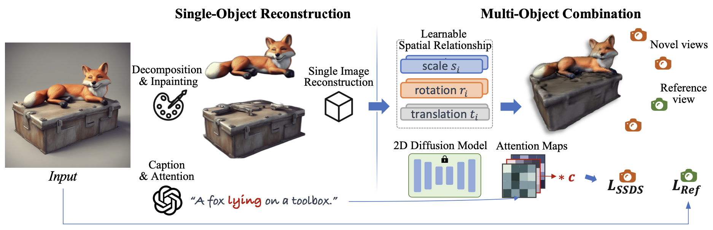
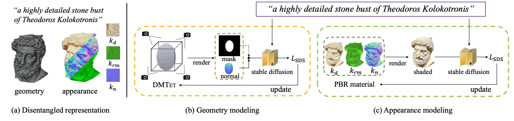
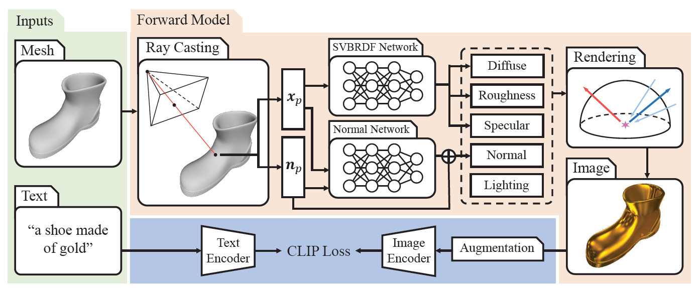
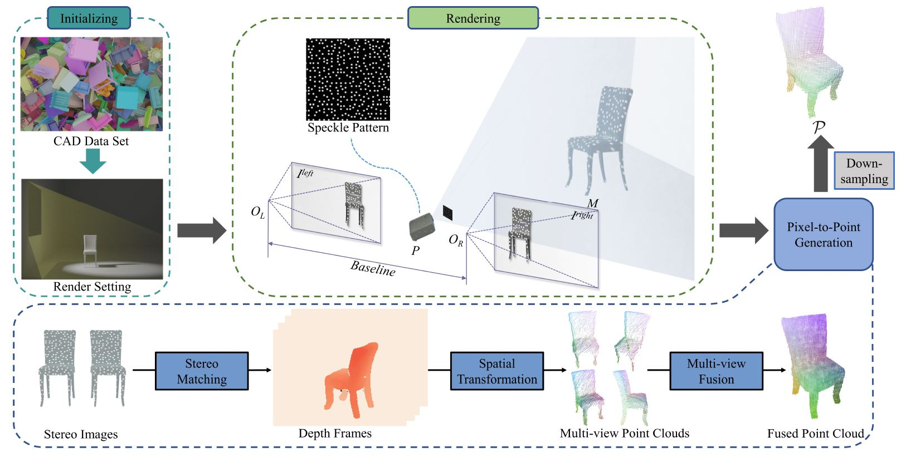
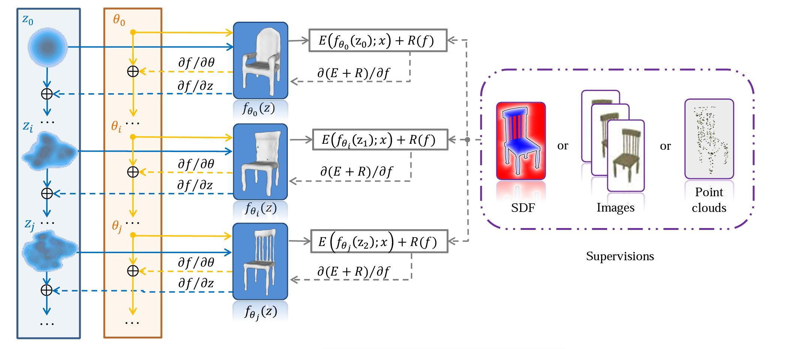
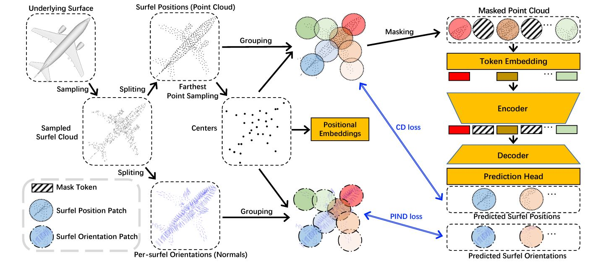

Yongwei Chen（陈永炜）
I am currently conducting my research and will pursue my PhD studies in MMLab@NTU, supervised by Xingang Pan. Prior to this, I earned both my Master's and Bachelor's degrees at South China University of Technology, under the mentorship of Kui Jia. My primary research interest lies in the exciting and constantly-evolving realm of 3D vision and graphics, with a particular emphasis on 3D generation.
Email / Google Scholar / CV
News
Reasearch
ComboVerse: Compositional 3D Assets Creation Using Spatially-Aware Diffusion Guidance
Yongwei Chen*, Tengfei Wang*, Tong Wu, Xingang Pan, Kui Jia, Ziwei Liu
* equal contribution
ECCV 2024 | Paper | Project Page | Video

Fantasia3D: Disentangling Geometry and Appearance for High-quality Text-to-3D Content Creation
Rui Chen*, Yongwei Chen*, Ningxin Jiao, Kui Jia
* equal contribution
ICCV 2023 | Paper | Project Page | Code | Video

TANGO: Text-driven Photorealistic and Robust 3D Stylization via Lighting Decomposition
Yongwei Chen, Rui Chen, Jiabao Lei, Yabin Zhang, Kui Jia
NeurIPS 2022 | Paper | Project Page | Code

Quasi-Balanced Self-Training on Noise-Aware Synthesis of Object Point Clouds for Closing Domain Gap
Yongwei Chen*, Zihao Wang*, Longkun Zou, Ke Chen, Kui Jia
ECCV 2022 | Paper | Code

Deep Optimized Priors for 3D Shape Modeling and Reconstruction
Mingyue Yang*, Yuxin Wen*, WeiKai Chen, Yongwei Chen, Kui Jia
CVPR 2021 | Project Page |
Paper

Masked Surfel Prediction for Self-Supervised Point Cloud Learning
Yabin Zhang, Jiehong Lin,
Chenhang He, Yongwei Chen,
Kui Jia, Lei Zhang
Preprint | Paper | Code
